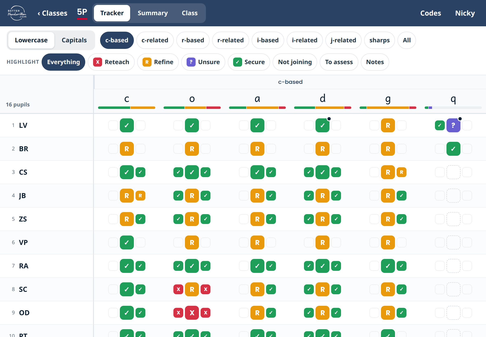
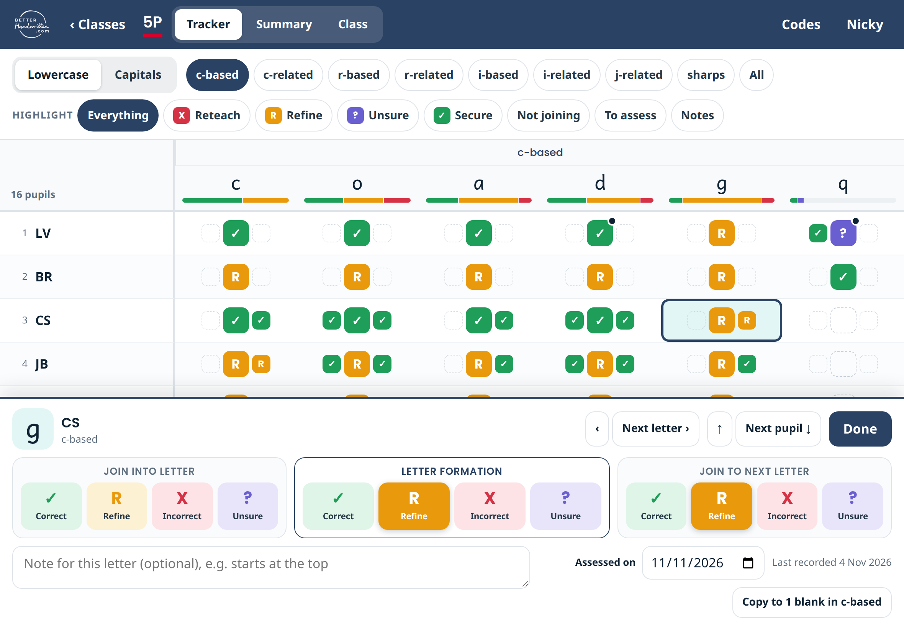
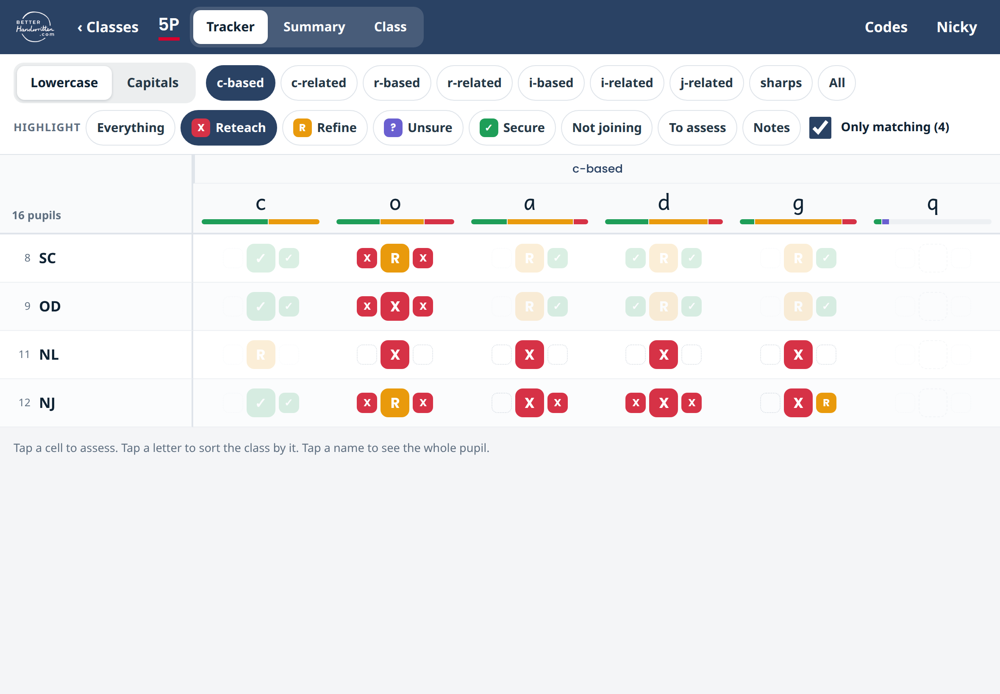
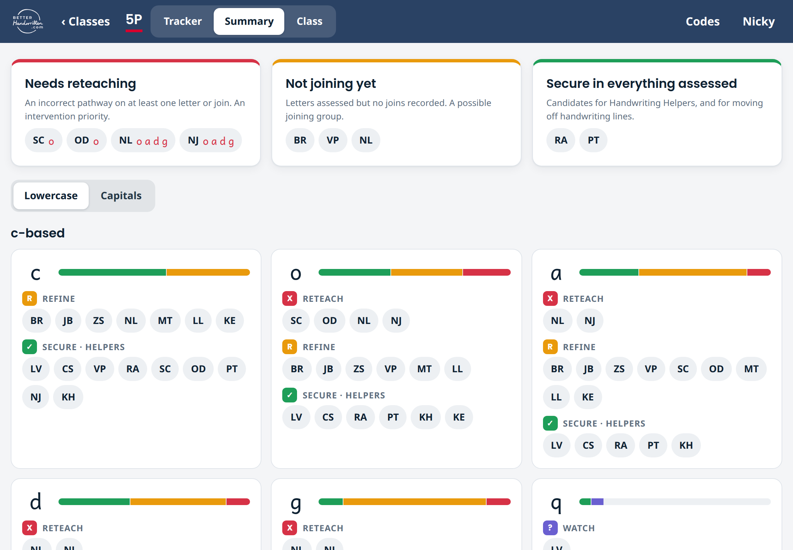
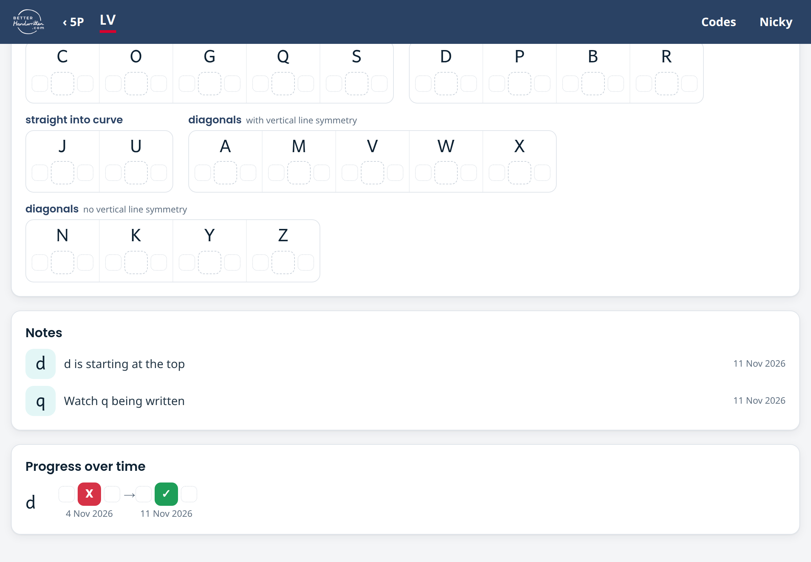
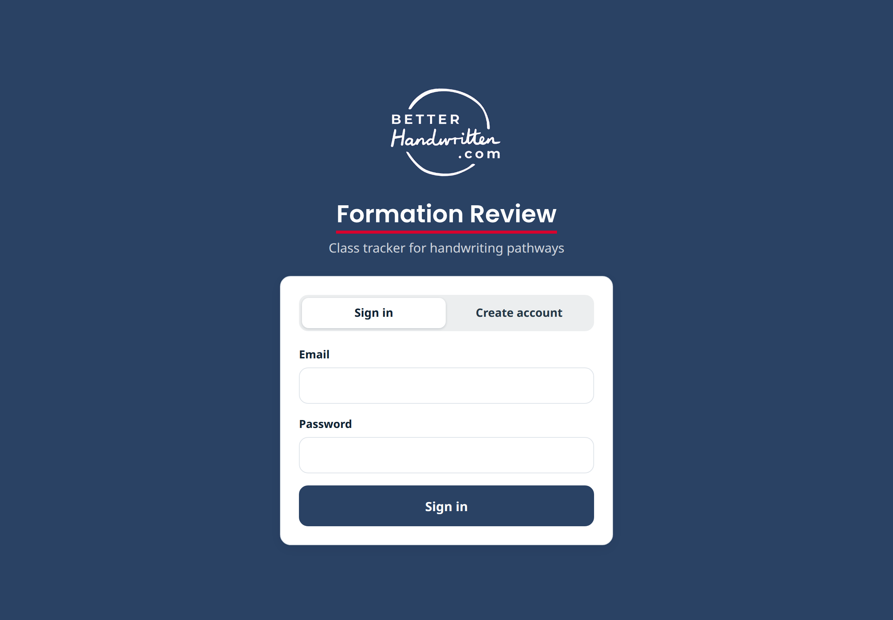

A first look, for your review
Your class tracker as a website teachers sign in to: the same groups and codes, with the things paper could not do.
For Nicky Parr · from Dave · November 2026
| What you said | What the tracker does |
|---|---|
| “I want the join into the letter … and the join to the next letter.” | Every cell has three parts: join in, letter formation, join to next. |
| “You want to be able to change that cell.” | Tap any cell and change it. Unsure cells can be picked out to revisit. |
| “My note has to be separate because there’s not space.” | The note lives on the letter itself and shows as a dot on the cell. |
| “The sorting will be really valuable.” | Sort the class by any letter. Highlight reteach, refine, not joining or secure. |
| “Red for X, green for tick, amber for Refine.” | Exactly that, with your symbols kept on every colour. |
| “They could do … two children one day.” | Each entry saves as it is made and carries its own date. |
Quotes from our call on 28 October
The tracker
Pupils down the side, letters across, in your formation groups. Lowercase and capitals are both there.
The bar under each letter shows the whole class at a glance, so no letter is overlooked.

Sample data: the half class from your video, c-based letters
R
Ana’s a from your video: formation needs refining, the join to the next letter is correct, and no join in has been recorded.
Correct, green tick
R
Refine, amber R
X
Incorrect, red X
?
Unsure, purple question mark
Blank, no evidence or no join
Classes that are not joining show the letter formation only
Assessing
A panel opens with large buttons for each part. It saves by itself.
“Next letter” works along a pupil’s row. “Next pupil” works down a letter’s column.
A note and a date sit with the letter, not on a separate sheet.

A code can be changed at any time, so a question mark is never stuck
Highlight and sort
One tap picks out Reteach, Refine, Unsure, Secure, Not joining, To assess or Notes. Everything else fades.
“Only matching” hides the other pupils. Tapping a letter sorts the class by it.

Shown: Reteach, only matching pupils
Summary
The class is grouped for the teacher: who needs reteaching, who is not joining yet, and who is secure.
Each letter then lists its own groups, with secure pupils named as possible Handwriting Helpers.

Pupils not yet assessed are listed too, so no child is overlooked
One pupil
Tap a name to see every letter group for that pupil, when a concern calls for the full picture.
Their notes build into a record. When a letter is reassessed later, the change shows as progress over time.

Shown: LV, with d moving from incorrect to correct a week later
Getting in
Teachers create an account with an invite code you hand out, then sign in with email and password.
Each teacher sees only their own classes. Pupils can be entered as initials.
It runs in Safari on an iPad. There is nothing to install.

A class can also be downloaded as a spreadsheet
The paper tracker lists C twice in the curves group. I included it once. Should the second be another letter?
Are “Join into letter” and “Join to next letter” the words you would use with teachers?
g, y and k sit in two groups each and are assessed separately in each. Is that what you intend?
A blank join means “not present”. Do you want a separate mark for a join left out by choice, like g?
Reteach, not joining, secure: are these the groups a teacher needs first, and is anything missing?
The app has a short key to the codes. How much of your teacher guide should sit inside it?
Tell me anything that feels wrong, slow or missing.